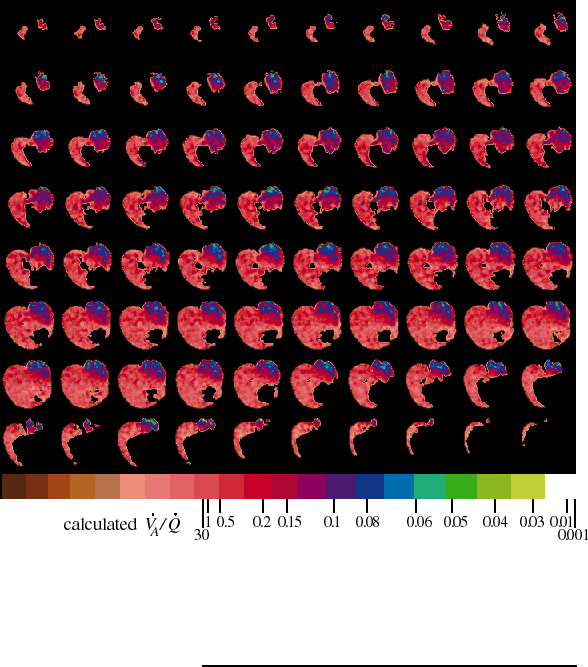

Image of obstructed ventilation is the quotient of two NMR images of SF6 in rat lungs. The left bronchus is partially obstructed. An obstruction-detecting image, made from 1.5 hours of data collection while the rat breathed 25% SF6 : 75% O2, is divided by a reference image, made from 1 hour of data collection while the rat breathed 80% SF6 : 20% O2. From top left to bottom right, eighty successive x-y planes, each with 72 by 74 pixels, are displayed from anterior (forward) to posterior (rear). The first row contains the anterior tips of the lungs while lower down, the dark heart and mediastinum separate the pink right lung from the purple and blue left lung. The large dark area in the lowest planes is the diaphragm and liver. Pixel values range from 0 (black) to 1 (white), and are divided into 21 color bands. The width of the color bands is one standard deviation for individual pixels of that color. This measurement error is greater for higher pixel values so the right color bands are wider than the left ones. The ventilation-to-perfusion ratio (VA/Q) scale shows which colors represent different ratios. Like many lab rats, this one has a small lobe of right lung in the posterior left thorax, which accounts for the pink portion on the left side of the rat (right side of image).
